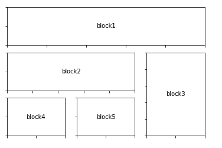

Matplotlib subplot2grid()函数
原文：https://www.studytonight.com/matplotlib/matplotlib-subplot2grid-function
在本教程中，我们将介绍基于状态的界面中的subplot2grid()函数，即 Matplotlib 库中的 Pyplot
该功能用于在网格内的特定指定位置创建轴对象时提供额外的灵活性。
对于轴对象跨越多行或多列的，我们将使用这种方法。
subplot2grid()功能也被称为子图形布局管理器。简而言之，我们将使用该功能在同一图形内创建多个图表。
Matplotlib subplot2grid()函数
subplot2grid()功能或matplotlib.pyplot.subplot2grid功能可以很容易地用于在同一个图形内创建多个图表，下面是其语法:
matplotlib.pyplot.subplot2grid(shape, location, rowspan, colspan)
Matplotlib subplot2grid()参数:
让我们讨论一下这个函数使用的参数:
形状
形状参数用于指示图形内部要绘制的网格的形状。这是对这个方法的强制性论证。
通常作为两个数字的列表或元组传递，主要负责网格的布局，第一个数字表示的行数，而第二个数字表示的列数。
位置
该参数也是该功能取的强制参数。这种方法类似于形状参数，通常也作为两个数字的列表或元组传递。用于指定放置子图的行号和列号。需要注意的一点是指数总是从 0 开始。
所以 (0，0) 是网格的第一行和第一列的单元格。
行跨度
使用位置(loc)参数设置网格布局和起始索引后，如果需要，还可以扩展选择以使用此参数占据更多行。这是一个可选参数，默认值为 1。
colspan
该参数与行跨度参数相似，用于排序扩展选择以占用更多列。这也是一个可选参数，默认值为 1。
示例:
让我们绘制一个图形对象的 3x3 网格，该网格由不同大小的轴对象以行和列跨度填充。其代码片段如下所示:
import matplotlib.pyplot as plt
def annotate_axes(fig):
for i, ax in enumerate(fig.axes):
ax.text(0.5, 0.5, "block%d" % (i+1), va="center", ha="center")
ax.tick_params(labelbottom=False, labelleft=False)
fig = plt.figure()
ax1 = plt.subplot2grid((3, 3), (0, 0), colspan=3)
ax2 = plt.subplot2grid((3, 3), (1, 0), colspan=2)
ax3 = plt.subplot2grid((3, 3), (1, 2), rowspan=2)
ax4 = plt.subplot2grid((3, 3), (2, 0))
ax5 = plt.subplot2grid((3, 3), (2, 1))
annotate_axes(fig)
plt.show()
上述代码片段的输出如下:

总结:
所以现在你知道如何使用 Matplotlib subplot2grid()函数在一个图形中制作多个轴对象，这个函数很容易使用，正如我们在上面的代码示例中看到的。